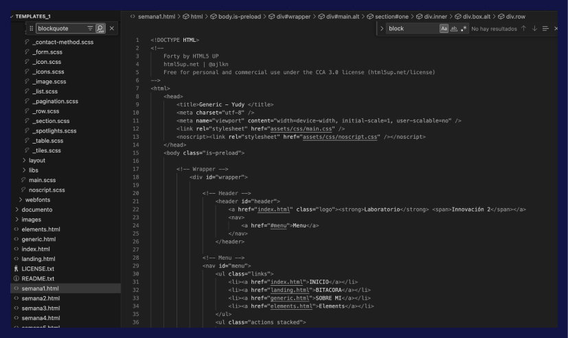
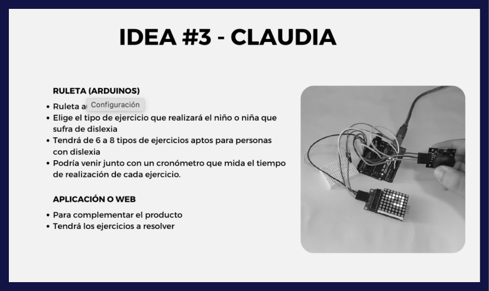
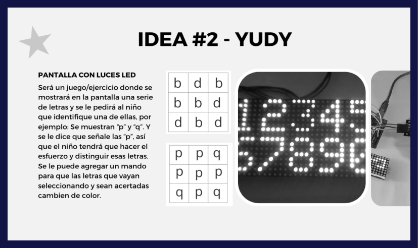

Semana 3
13 de septiembre
La clase virtual se dividió en dos partes. En la primera parte, avanzamos en el desarrollo de nuestra página web, donde la profesora continuó con el tema de HTML, nos brindó orientación para personalizar nuestra página y nos introdujo al mundo del CSS, que abarca aspectos estéticos como centrar imágenes, cambiar colores y tipografías. Yo avancé la primera semana y fui explorando todas las herramientas que la miss me estaba enseñando. En ese momento no sé por qué me pareció buena idea cambiar tal vez el template, dije: "Quiero hacer algo diferente", pero bueno, viendo y checando bien el hecho de que la miss estaba enseñando todo en base a la otra plantilla pues mejor decidí quedarme con esa.
 En la segunda parte de la clase, la profesora nos organizó en grupos para que cada uno presentara su idea de proyecto. En nuestro caso, surgieron cinco propuestas destacadas, pero al final se fusionaron dos ideas: la de Yudy y Claudia. La propuesta de Yudy consistía en un juego o ejercicio en el que se muestra una serie de letras en pantalla y se le pide al niño que identifique una de ellas, por ejemplo, seleccionar las letras "p" de entre "p" y "q". Esto requeriría que el niño haga el esfuerzo de distinguir las letras, y se podría añadir un sistema para cambiar el color de las letras seleccionadas correctamente. Y a esta se idea se le agregó la propuesta de Claudia de agregar un cronómetro para que el usuario pudiera medir su progreso.
Lo que aprendí
Aprendí a investigar y a buscar referencias de proyectos, pues la problemática escogida fue una que no había tratado antes y eso también me motivó a salir de mi zona de confort al momento de pensar.
Puntuación de clase: 8/10
Me pareció divertido y dinámico porque pudimos tomar la decisión de elección de proyecto rápido, y eso que hizo no nos atrasemos y fueramos de frente con la lista de componentes.
15 de septiembre
Esta clase la empezamos intercambiando las ideas de bocetos que cada uno tuvo, ya que esa fue la tarea que nos dejaron el lunes. También terminamos de pulir algunas de ellas. Al comienzo decidimos volar en imaginación con cada boceto pero poco a poco fuimos aterrizándolos más y viendo qué cosa sí podíamos hacer.


Una vez ya teniendo nuestra idea procedimos a elaborar en equipo el arquetipo del comprador y del usuario final.
La miss abrió un entregable en el moodle así que nos pusimos todos a colaborar con la información que requería el trabajo, también elaboramos el mapa de actores. Ahí ya estabamos un poco contra el tiempo así que Claudia y yo terminamos los arquetipos, Andrea y Alvaro se encargaron del mapa de actores y finalmente Jennifer se dedicó a definir y pulir la lista de componentes. De esa manera una vez que terminamos lo colocamos en el Canva y entregamos la tarea vía Moodle.Frase del día
5 cabezas piensan mejor que una

Lo que aprendí
Aprendí a elaborar dos tipos de arquetipo jajaja, hasta ahora en todos mis trabajos solo había elaborado uno y en esta ocasión tuvimos que armar uno para el comprador del proudcto (que era el padre), y otro para el usuario final, que es quién realmente le daría el uso al produco (el niño con dislexia).
Puntuación de clase: 10/10
Me gustó muchísimo todo el trabajo en equipo que tuvimos, sin duda nos unimos a dos chicas geniales que saben trabajar y son muy comprometidas. Pues estabamos con el tiempo y aún así logramos sacar el mejor resultado para poder presentarlo en el moodle antes de que acabara la clase.